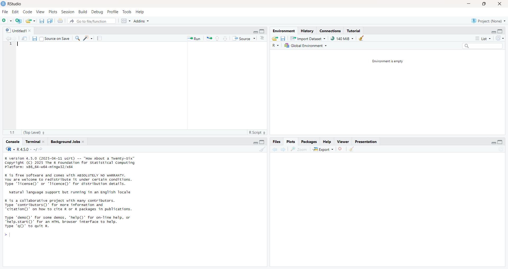
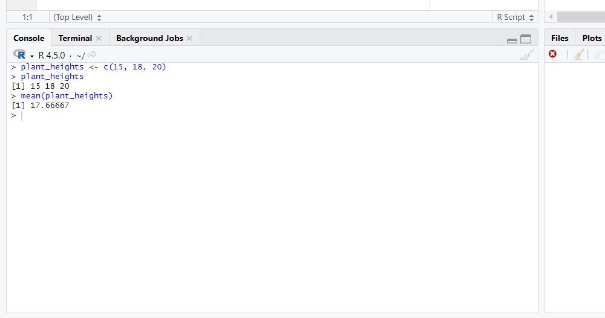
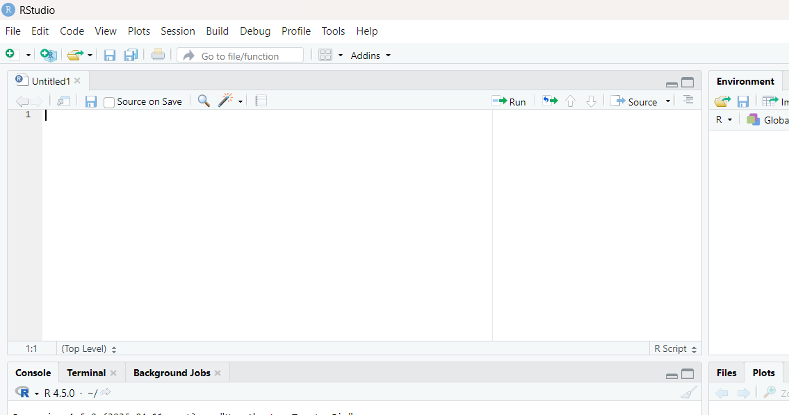

2 Initial steps
2.2 Your first R command: a simple calculation
For your first interaction with R, we will start with something very basic. We will type some code directly into the R console and observe the results. [Expression evaluation]
Imagine you have collected a few measurements, say the heights (in cm) of three plants: 15 cm, 18 cm, and 20 cm. In R, you can represent these values as a vector using the c() function (which stands for “combine”). Next, we assign those values using the assign symbol, <-, into a variable named plant_heights.
Type the following into your R console and press Enter:
plant_heights <- c(15, 18, 20)You have just created a variable (or object) named plant_heights that holds the data!
We can check the values of the plant_heights object by printing to the console. Simply type the variable name into your R and press Enter, and you should see the values printed back to you:
plant_heights[1] 15 18 20Now, to calculate the average height, R has a built-in function called mean(). Simply type the following code into the console and press Enter, and R will display the mean (average) of the values in your plant_heights vector. This simple example demonstrates how easily you can input data and perform basic calculations in R.
mean(plant_heights)[1] 17.66667
2.3 Using an R script to record your code
So far, you’ve directly typed commands into the R console and seen the immediate output. This is a great way to explore and get quick answers, but for any serious data analysis in scientific research, you will want a more permanent and organized way to store your code: the R script.
An R script is simply a plain text file, typically saved with a .R file extension, where you write and save all your R commands. Think of it as your laboratory notebook for R code.
RStudio allows us to create and edit R scripts in the Source panel.

Here’s why using an R script is essential:
Reproducibility: Scientific research demands reproducibility. By saving your code in a script, you can re-run your entire analysis at any time, ensuring you get the exact same results. This is crucial for verifying your work, sharing it with collaborators, and publishing your findings.
Organization and Readability: As your analyses grow more complex, a script helps you organize your code logically. You can break down your analysis into manageable sections , making it easier to understand what each part of your code does, even weeks or months later.
Collaboration: When working with others, sharing an R script is far more effective than trying to convey commands verbally or through screenshots. Everyone can see the exact code used and contribute to its development.
Error Checking and Debugging: It’s much easier to spot and correct errors in a well-structured script than trying to remember a long sequence of console commands.
2.3.1 Creating your first script
Add the following line of code to a new script within RStudio.
whale_breaches <- c(3, 5, 2, 4)
whale_breaches2.3.2 Sending Code from Script to Console
RStudio provides a seamless way to send code from your script to the console for execution. You can type your commands into the script editor pane. To run a line or a selected block of code, simply place your cursor on the line (or highlight the block) and press Ctrl + Enter (on Windows/Linux) or Cmd + Enter (on macOS). RStudio will then send that code to the console, and you’ll see the output appear there, just as if you had typed it directly. Try this now with the code you just copied to your R script. You should see the following in the R console.
> whale_breaches <- c(3, 5, 2, 4)
> whale_breaches
[1] 3 5 2 42.3.3 Commenting your code
A crucial aspect of good scripting practice is adding comments to your code. Comments are lines in your script that R ignores when executing the code. They serve as explanations or notes to yourself and others about what your code does, why you made certain decisions, or to temporarily disable a line of code. In R, anything following a # symbol on a given line is considered a comment.
In your introductory phase of learning R, you will want to comment on what each line of code is doing. For example
# This line stores the values into the variable called whale_breaches
# c() combines values into a vector
whale_breaches <- c(3, 5, 2, 4)
# This prints the values inside the variable whale_breaches to the R console
whale_breaches2.3.4 Syntax highlighting in RStudio
You might have already noticed that RStudio automatically colors different parts of your code in the script editor. This feature, called syntax highlighting, makes your code much easier to read and understand. Comments, numbers, text and keywords are typically displayed in different colors, helping you quickly identify the various components of your script and spot potential typos or errors. For instance, comments will often appear in a distinct color (like green), making them clearly stand out from the executable code. This visual aid is incredibly helpful, especially as you begin writing more complex scripts.
# Here is some code that should highlight syntax highlighting
number_values <- c(1,2,3)
text_values <- c('Some', 'text')
square_x <- function(x){ x^2 }2.4 Extending R with additional packages
R’s true power lies in its extensibility through packages. Think of packages as add-ons or plugins that provide specialized functions, tools, and datasets beyond what comes with the initial R installation. In practice, you will find that almost every R project you undertake will involve installing and utilizing several packages, and which is why we mention them from the very beginning. Fortunately, most of these valuable packages are hosted on reputable repositories like CRAN, ensuring their quality and ease of access.
2.4.1 Installing packages
This downloads the package to your computer, for later use in R. Think of this as analogous to downloading and installing Microsoft Office on your computer.
install.packages("")2.4.2 Loading package
When you need to use an additional R package, you load it into your current session using the library(). Think of this analogous to starting Microsoft Word once you have started your computer.
library()Lots of beginners tend yo have install.packages() + library() in their workflows to its best to attempt clarification now. We attempted to use an analogy of installing Microsoft Office and then opening Microsoft Word. Image instructing someone to always download and install Microsoft Office every time they wish to open Microsoft Word!
2.4.3 Package helpers
Given the above, there have been attempts to address this issue using such packages as pacman.
TODO
2.5 RStudio configuration
Turn off default